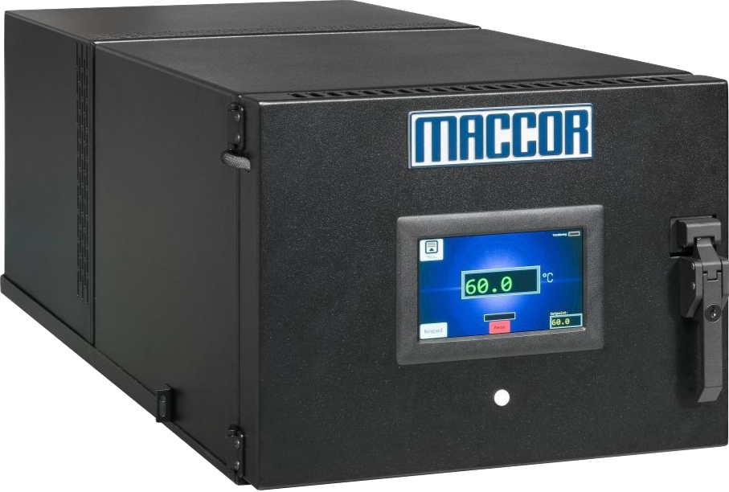

Temperature Chamber
Heat / Cool Chamber
Approximately 1 ft³ of workable area in a compact 12.25″ (7U) high enclosure with a non-conducting powder-coated interior. Heat/cool operation from +10°C to +100°C at ±0.5°C.
~1 ft³ Workable Area
Heat / Cool
7U High